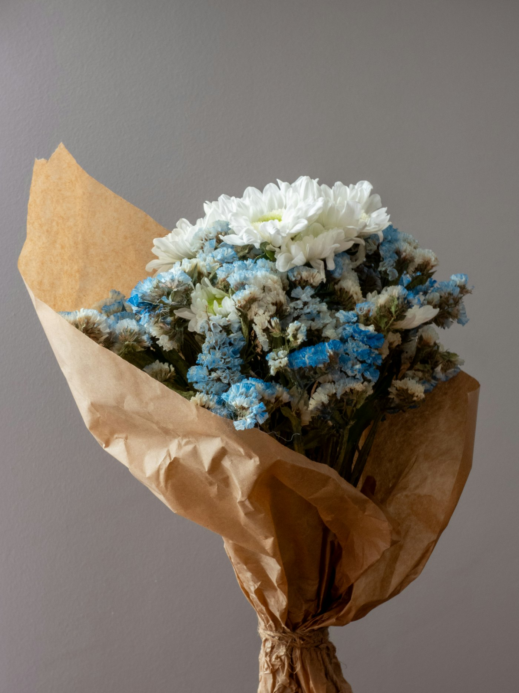

横浜西口の、
借りぐらしの花屋。A florist living
in borrowed rooms,
by Yokohama West Exit.
横浜駅西口、ドン・キホーテ方面。1階のアジアン料理のお店の、2階にある小さな花屋です。花束・ブーケはご予約で、成人式やお祝いの花もお仕立てします。A tiny flower shop on the second floor above an Asian restaurant, toward Don Quijote from Yokohama Station’s West Exit. Bouquets are made to order — including coming-of-age day and celebration flowers.
ORDER NOTE
10月の再開にあわせて、ご予約を。Book ahead for the October reopening.
用途・雰囲気・受け取り日を選ぶと、DMやメールにそのまま送れる文面ができます。サイズと価格はInstagramのハイライト「size/price」をご覧ください。Choose the occasion, mood and pick-up date to get a message you can send by DM or email. Sizes and prices are in the “size/price” highlight on Instagram.
OCCASION
MOOD
PICK-UP
MESSAGE
sosuiflower@gmail.com · Instagram DMHOW IT WORKS
受け取りまでの流れFrom order to pick-up
- 01 SCHEDULE営業日を確認Check open daysハイライト「schedule」で。See the “schedule” highlight.
- 02 SIZEサイズを選ぶPick a size「size/price」に目安があります。Guide in “size/price”.
- 03 ORDERDM・メールで注文Order by DM/email上のメモをそのまま送れます。Send the note above.
- 04 PICK-UP2階で受け取りCollect upstairs詳しくは「pickup」へ。Details in “pickup”.
ACCESS
横浜駅西口・南幸Minamisaiwai, Yokohama West Exit
- 住所Address
- 〒220-0005 横浜市西区南幸2-10-13 第2河内ビル2FDaini Kawachi Bldg 2F, 2-10-13 Minamisaiwai, Nishi-ku, Yokohama
- 目印Landmark
- 1階がアジアン料理のお店ですAbove the Asian restaurant on the ground floor
- 営業Open
- 6月〜9月は季節休業。お花の営業は10月より再開予定Seasonal break June–September; flowers return in October
- sosuiflower@gmail.com
- @sosui_flower